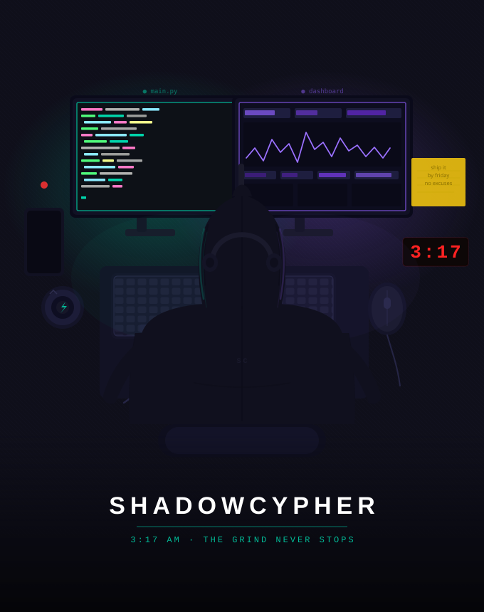
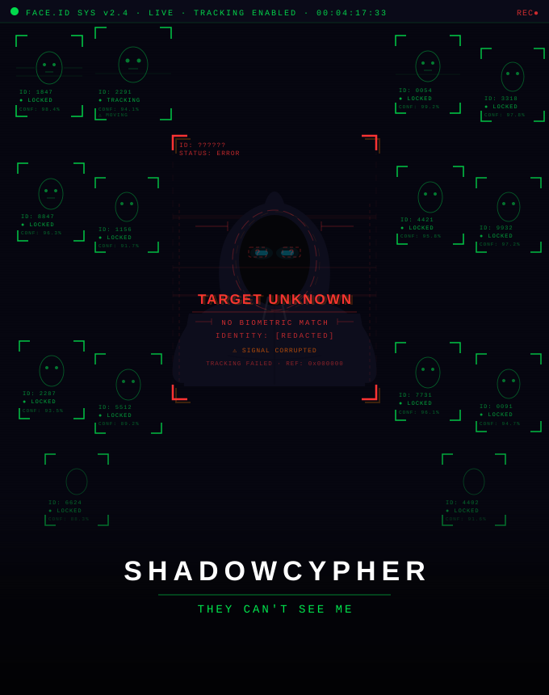

Most streetwear is decoration. A logo. A pattern. Something to fill the space. This isn't that.
Every piece in this collection tells a chapter. Late nights you lived. The feeling of being the only one who gets it. The weight of protecting something that most people can't even see. If you've felt any of that — you already know what these designs mean.
The shadow doesn't explain himself. He just shows up.

Dual monitors. Rain on the window. Clock says 3:17. You should've gone to bed hours ago. But the cursor is blinking and the code isn't done and somehow this is the best part of the day — when the noise stops and it's just you and the work. This one's for every night like that.

Walk through any crowd and watch. Everyone's face is lit up by a phone. Nobody is here. But you see it. You see all of it. The thing about being different is you can't turn it off — but you start to realize: maybe invisible isn't a curse. Maybe it's your superpower. Ghost Mode is on. Always.

Midnight. Arms crossed. City spread out below. Everyone is sleeping. He never does. Not because he can't — because someone has to watch. The guardian doesn't ask for credit. Doesn't need a spotlight. He's just there. Every night. On the ledge. While you rest, he's already on the next thing.
Quality that holds up. What these hoodies are made of.
| Weight | 450gsm French Terry — thick, structured, substantial. Not the papery stuff. |
| Finish | Enzyme Wash — softens the surface without killing the weight. Lived-in from day one. |
| Construction | Drop shoulder, flatlock seaming, kangaroo pocket, drawstring. No corners cut on construction. |
| Print Method | Discharge + Water-Based Ink — prints into the fabric, not on top of it. Won't crack, won't peel. |
| Labels | Woven internal label, heat-removed brand tag. Clean neck, ShadowCypher branded. |
| Current Phase | POD via Printful (testing demand) — production upgrade at 50+ units/design |
| Target Supplier | Turkish mill (Baran Tekstil) or Royal Apparel — same construction tier as original Freshoodz |
How this collection goes from design file to your hands.
Printful POD. Live on Shopify. Learn which designs actually move before committing to inventory. No dead stock, no wasted capital.
Hit 50 orders per design → switch to Turkish mill. 450gsm French terry, enzyme wash, discharge print. Same specs, 3x the quality, better margin.
Expand the story. New chapters, new characters. Woven label, custom packaging, limited drops. ShadowCypher as a real streetwear brand.
Print files — what actually goes on the garment.